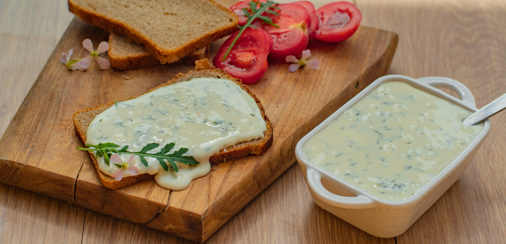

Maionese Temperada
| Dificuldade |
|---|
| Fácil |

Ingredientes:
- 2 Ovos Inteiros
- 1 Colher (chá) de sal
- 1 Colher (sopa) de suco de limão puro
- 1 Colher (chá) de mostarda
- 250 ml de óleo de soja (ou azeite)
- Salsinha e cebolinha picadas a gosto
- Pimenta do reino a gosto
- 1 Colher (chá) de tempero de ervas finas (opcional)
Modo de Preparo
- Bater os ingredientes básicos: No liquidificador ou mixer, coloque os ovos, sal, suco de limão, mostarda e, se usar, o tempero de ervas. Bata até misturar bem.
- Emulsionar com o óleo: Com o liquidificador ligado, despeje o óleo em fio, sem parar de bater, até formar um creme denso.
- Finalizar com aromáticos: Adicione a salsinha e a cebolinha picadas, bata por alguns segundos.
- Ajuste e conservar: Se necessário, acrescente mais óleo para engrossar. Leve à geladeira até o momento de servir.